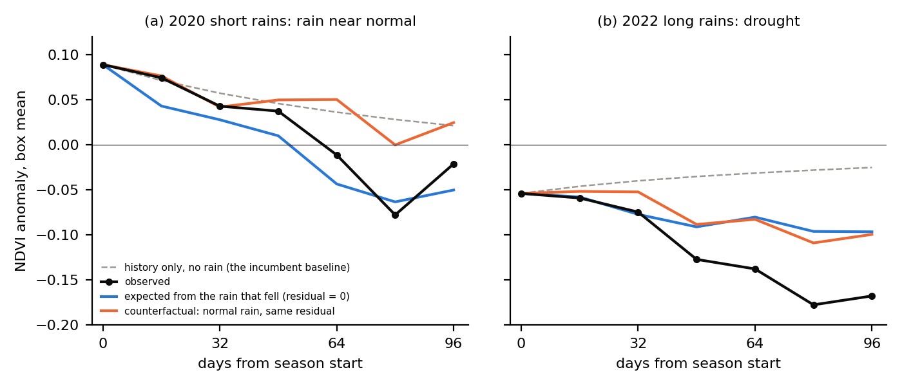
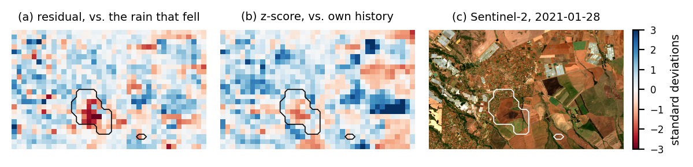

When grassland goes brown, maybe the rain failed. Maybe something else happened: too many cattle, a fire, land being cleared. Real money depends on telling these apart. This page explains a model that splits what happened to the land into the rain's part and everything else.
A grass patch through the 2022 drought season, one tile per 16 days. Greener than normal is green, browner than normal is brown.
Carbon credits. A project gets paid for making land healthier than it would have been anyway. "Anyway" is called the baseline. The Northern Kenya Rangelands Carbon Project is the world's largest soil-carbon project. In 2023 its baseline was challenged hard enough that Verra, the body that issues the credits, paused it for eight months. The method it used never asks how the land responds to rain.
Drought insurance for herders. Insurance in the same region pays herders when pasture is poor. The insurer wants to pay for drought, but not for overgrazing.
Both need to know how much of a brown season was the rain. The usual shortcut compares a patch with its own past: "is it browner than it normally is on this date?" That ignores this year's rain. So in a drought, the shortcut blames the people managing the land.
A NASA satellite called MODIS measures how green the ground is every 16 days, for every 250 m square, going back to 2002. A rainfall dataset called CHIRPS adds up how much rain fell on each square over the same 16 days.
The study looks at two areas in Laikipia, central Kenya, each 45 km across. That is 160 × 160 squares, so 25,600 squares per area. Laikipia has two rainy seasons, March to May and October to December.
To keep the test fair, the model learned from Area A in 2003–2017. It was then tested on 2019–2025, years it had never seen, including the 2022 drought. It was also tested on Area B, which it never saw at all.
Every 16 days, for every square, the model makes a forecast from what it knows right now. It doesn't look back through the whole history. Everything it needs is packed into two numbers per square.
The anomaly: how green the square is compared with normal for today's date.
Think of a leaky bucket. Every 16 days it keeps 38% of what it held, and the new rain is poured in. So it records "how much has it rained lately", with recent rain counting most. Here is 100 mm of rain falling once, then nothing:
The bucket forgets fast. The longer memory lives in the grass itself: once grass has grown, it takes about five weeks for half of a green or brown spell to fade.
The bucket is worked out directly from the rain records. The model never has to guess it. That matters later.
A small neural network, the same one for all 25,600 squares
"Patch type" is three fixed facts about each square: how green it usually is, how much its greenness swings over a year, and how much rain it usually gets. Two squares with the same facts and the same current state get the same forecast.
The spread changes too. After heavy rain more outcomes are possible, so the model widens its range. An extra 100 mm of rain makes the range about 21% wider.
greenness in 16 days = greenness now + expected change + leftover
The expected change is what the rule predicts. The leftover is everything the rule didn't see coming.
The paper tries four versions of the rule, each a bit more powerful than the last.
| Name | What it does |
|---|---|
| M0 | Ignores rain completely. Like the usual shortcut: it only knows the past. |
| M1 | Adds rain, but every input just adds up in a straight line. |
| M1.5 | Adds a hand-drawn S-shaped curve: a little rain does little, more rain helps a lot, then it maxes out. |
| M2 | Adds a small neural network (64 neurons) on top of M1, free to learn any shape it needs. |
Each one learns by guessing each next 16-day step and being scored on how well its guess, with its spread, matched what the satellite saw. It never practises long forecasts. So doing well three months ahead is a real test, not something it was trained for.
A surprise: the S-curve model learned to switch its own curve off. The effect of rain isn't one simple shape. The same rain does different things depending on how green the patch already is, the time of year, and the type of land. The neural network can learn those combinations. A single curve can't.
Normally you feed a model inputs and get a forecast. But here we also know what actually happened, because the satellite saw it. So we can run the equation backwards:
leftover = (what happened − best guess) ÷ spread
We know greenness now, we know the rain, and the bucket comes straight from the rain. The leftover is the only unknown, so there is exactly one answer. One number per square, every 16 days.
Dividing by the spread puts the leftover in the model's own units. A leftover of −1 means "browner than expected by a typical miss". A leftover of −3 means "something unusual happened here".
What ends up in the leftover? Anything the rule can't see: cattle, fire, clearing, fences. But also mistakes: errors in the rain data, errors in the model, and noise from the satellite. The paper assumes the data errors and noise even out over a lot of data.
Now the useful part. Once you have each step's leftover, you can replay the season with different rain:
What comes out is the land under normal rain, with everything else that happened kept the same. Put the real rain back in and you get exactly what the satellite saw, which is a good check that nothing was lost. Researchers call this a counterfactual: "what would have happened if".
This is a cut-down copy of the model so you can play with it. It uses a simple straight-line rule tuned to behave like the real one, not the trained neural network. Pick a season, then hide something in it. The model only sees the rain and the satellite. Can it find what you hid?
In March to May 2022 the rain was 124 mm below normal. By the end of the season Area A was 0.17 NDVI browner than normal. The rain-blind shortcut expected it to recover, so it would blame the whole 0.17 on the land's managers.
The real model splits it up:
Re-run under normal rain with the same leftovers, the land still ends 0.10 below normal. That orange line is what a carbon credit should be measured against. The gap between it and what happened is the rain's share, which is what drought insurance should pay for.

Because the model is a formula, you can ask how its forecast changes when you nudge one input. This is a derivative, the slope from calculus, and the computer works it out exactly. The paper borrows names from finance for these. Here are the main two.
Add 100 mm of rain in the long rains. The extra greenness peaks a month later at about 0.075, then about half has faded after three months. Δ was positive for every square.
Start a square browner than normal and hold the rain fixed. Half the difference is gone in about 35 days. A simple check straight from the data gives 38 days.
The model gives every square its own Δ, worked out from that square's current state. Does it pick out the squares that really respond more? Sort the squares into thirds by Δ: the top third really did green about twice as much per 100 mm as the bottom third, in unseen years and on unseen land.
One more finding: how much a square responds depends on its current state, not just on which square it is. A fixed map of Δ averaged over past years did no better than using one number for every square.
Why would anyone care? An insurer holding a contract on a square is exposed to the rain there. Δ says exactly how exposed, square by square. That is what you need to price the contract fairly.
The leftover is also an alarm. A drought doesn't set it off: low rain predicts browning, so browning isn't a surprise. A fire or a bulldozer does set it off: the land drops for a reason the rain can't explain.
The paper tunes each method so it raises a false alarm on 5% of normal land. Then it counts alarms during the two drought seasons, when the land browned but nothing burned. The rain-blind shortcut raised alarms on 24% of squares. The model raised them on 5%, the same as in an ordinary season.

An option is a contract that lets you buy a share at a fixed price at a later date. In 1973 Fischer Black and Myron Scholes published a formula for what an option is worth. You feed it the share price, the fixed price, the time left, the interest rate, and the volatility: how jumpy the share price is.
You can't observe volatility directly. So traders run the formula backwards: take the price people are paying for the option, and solve for the volatility that would give that price. That is called implied volatility. The formula's slopes, called "the Greeks" (Delta, Theta and others), tell traders how much risk they are holding.
This paper does the same moves with grass:
| Finance | Grassland |
|---|---|
| The option price you can see | The greenness the satellite sees |
| The Black–Scholes formula | The learned rule |
| Implied volatility, solved for | The leftover, solved for |
| The Greeks | Δ, Θ, and how rain changes the spread |
The match isn't perfect. Implied volatility is one number for the whole contract. The leftover is a fresh number every 16 days. Black–Scholes also assumes jumpiness never changes. Here the spread grows with rain, and the model learns that on its own.